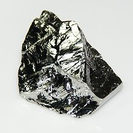

Germanium
| 
A 12 gram (2×3 cm) polycrystalline block of germanium with uneven cleaved surfaces
|
|||||||||||||||||||||||||||||||||||||||||||||||||||||||||||||||||||||||||||||||||||||||||||||||||||||||||||||||||||||||||||||||||||||||||||||||||||||||||||||||||||||||||||||||||||||||||||||||||||||||||||||||||||||||||||||||||||||
| General properties | |||||||||||||||||||||||||||||||||||||||||||||||||||||||||||||||||||||||||||||||||||||||||||||||||||||||||||||||||||||||||||||||||||||||||||||||||||||||||||||||||||||||||||||||||||||||||||||||||||||||||||||||||||||||||||||||||||||
|---|---|---|---|---|---|---|---|---|---|---|---|---|---|---|---|---|---|---|---|---|---|---|---|---|---|---|---|---|---|---|---|---|---|---|---|---|---|---|---|---|---|---|---|---|---|---|---|---|---|---|---|---|---|---|---|---|---|---|---|---|---|---|---|---|---|---|---|---|---|---|---|---|---|---|---|---|---|---|---|---|---|---|---|---|---|---|---|---|---|---|---|---|---|---|---|---|---|---|---|---|---|---|---|---|---|---|---|---|---|---|---|---|---|---|---|---|---|---|---|---|---|---|---|---|---|---|---|---|---|---|---|---|---|---|---|---|---|---|---|---|---|---|---|---|---|---|---|---|---|---|---|---|---|---|---|---|---|---|---|---|---|---|---|---|---|---|---|---|---|---|---|---|---|---|---|---|---|---|---|---|---|---|---|---|---|---|---|---|---|---|---|---|---|---|---|---|---|---|---|---|---|---|---|---|---|---|---|---|---|---|---|---|---|---|---|---|---|---|---|---|---|---|---|---|---|---|---|---|---|
| Name, symbol | germanium, Ge | ||||||||||||||||||||||||||||||||||||||||||||||||||||||||||||||||||||||||||||||||||||||||||||||||||||||||||||||||||||||||||||||||||||||||||||||||||||||||||||||||||||||||||||||||||||||||||||||||||||||||||||||||||||||||||||||||||||
| Pronunciation | /dʒərˈmeɪniəm/ jər-MAY-nee-əm |
||||||||||||||||||||||||||||||||||||||||||||||||||||||||||||||||||||||||||||||||||||||||||||||||||||||||||||||||||||||||||||||||||||||||||||||||||||||||||||||||||||||||||||||||||||||||||||||||||||||||||||||||||||||||||||||||||||
| Appearance | grayish-white | ||||||||||||||||||||||||||||||||||||||||||||||||||||||||||||||||||||||||||||||||||||||||||||||||||||||||||||||||||||||||||||||||||||||||||||||||||||||||||||||||||||||||||||||||||||||||||||||||||||||||||||||||||||||||||||||||||||
| Germanium in the periodic table | |||||||||||||||||||||||||||||||||||||||||||||||||||||||||||||||||||||||||||||||||||||||||||||||||||||||||||||||||||||||||||||||||||||||||||||||||||||||||||||||||||||||||||||||||||||||||||||||||||||||||||||||||||||||||||||||||||||
|
|||||||||||||||||||||||||||||||||||||||||||||||||||||||||||||||||||||||||||||||||||||||||||||||||||||||||||||||||||||||||||||||||||||||||||||||||||||||||||||||||||||||||||||||||||||||||||||||||||||||||||||||||||||||||||||||||||||
| Atomic number | 32 | ||||||||||||||||||||||||||||||||||||||||||||||||||||||||||||||||||||||||||||||||||||||||||||||||||||||||||||||||||||||||||||||||||||||||||||||||||||||||||||||||||||||||||||||||||||||||||||||||||||||||||||||||||||||||||||||||||||
| Standard atomic weight (±) | 72.630(8)[1] | ||||||||||||||||||||||||||||||||||||||||||||||||||||||||||||||||||||||||||||||||||||||||||||||||||||||||||||||||||||||||||||||||||||||||||||||||||||||||||||||||||||||||||||||||||||||||||||||||||||||||||||||||||||||||||||||||||||
| Element category | metalloid | ||||||||||||||||||||||||||||||||||||||||||||||||||||||||||||||||||||||||||||||||||||||||||||||||||||||||||||||||||||||||||||||||||||||||||||||||||||||||||||||||||||||||||||||||||||||||||||||||||||||||||||||||||||||||||||||||||||
| Group, block | group 14 (carbon group), p-block | ||||||||||||||||||||||||||||||||||||||||||||||||||||||||||||||||||||||||||||||||||||||||||||||||||||||||||||||||||||||||||||||||||||||||||||||||||||||||||||||||||||||||||||||||||||||||||||||||||||||||||||||||||||||||||||||||||||
| Period | period 4 | ||||||||||||||||||||||||||||||||||||||||||||||||||||||||||||||||||||||||||||||||||||||||||||||||||||||||||||||||||||||||||||||||||||||||||||||||||||||||||||||||||||||||||||||||||||||||||||||||||||||||||||||||||||||||||||||||||||
| Electron configuration | [Ar] 3d10 4s2 4p2 | ||||||||||||||||||||||||||||||||||||||||||||||||||||||||||||||||||||||||||||||||||||||||||||||||||||||||||||||||||||||||||||||||||||||||||||||||||||||||||||||||||||||||||||||||||||||||||||||||||||||||||||||||||||||||||||||||||||
| per shell | 2, 8, 18, 4 | ||||||||||||||||||||||||||||||||||||||||||||||||||||||||||||||||||||||||||||||||||||||||||||||||||||||||||||||||||||||||||||||||||||||||||||||||||||||||||||||||||||||||||||||||||||||||||||||||||||||||||||||||||||||||||||||||||||
| Physical properties | |||||||||||||||||||||||||||||||||||||||||||||||||||||||||||||||||||||||||||||||||||||||||||||||||||||||||||||||||||||||||||||||||||||||||||||||||||||||||||||||||||||||||||||||||||||||||||||||||||||||||||||||||||||||||||||||||||||
| Phase | solid | ||||||||||||||||||||||||||||||||||||||||||||||||||||||||||||||||||||||||||||||||||||||||||||||||||||||||||||||||||||||||||||||||||||||||||||||||||||||||||||||||||||||||||||||||||||||||||||||||||||||||||||||||||||||||||||||||||||
| Melting point | 1211.40 K (938.25 °C, 1720.85 °F) | ||||||||||||||||||||||||||||||||||||||||||||||||||||||||||||||||||||||||||||||||||||||||||||||||||||||||||||||||||||||||||||||||||||||||||||||||||||||||||||||||||||||||||||||||||||||||||||||||||||||||||||||||||||||||||||||||||||
| Boiling point | 3106 K (2833 °C, 5131 °F) | ||||||||||||||||||||||||||||||||||||||||||||||||||||||||||||||||||||||||||||||||||||||||||||||||||||||||||||||||||||||||||||||||||||||||||||||||||||||||||||||||||||||||||||||||||||||||||||||||||||||||||||||||||||||||||||||||||||
| Density near r.t. | 5.323 g·cm−3 | ||||||||||||||||||||||||||||||||||||||||||||||||||||||||||||||||||||||||||||||||||||||||||||||||||||||||||||||||||||||||||||||||||||||||||||||||||||||||||||||||||||||||||||||||||||||||||||||||||||||||||||||||||||||||||||||||||||
| when liquid, at m.p. | 5.60 g·cm−3 | ||||||||||||||||||||||||||||||||||||||||||||||||||||||||||||||||||||||||||||||||||||||||||||||||||||||||||||||||||||||||||||||||||||||||||||||||||||||||||||||||||||||||||||||||||||||||||||||||||||||||||||||||||||||||||||||||||||
| Heat of fusion | 36.94 kJ·mol−1 | ||||||||||||||||||||||||||||||||||||||||||||||||||||||||||||||||||||||||||||||||||||||||||||||||||||||||||||||||||||||||||||||||||||||||||||||||||||||||||||||||||||||||||||||||||||||||||||||||||||||||||||||||||||||||||||||||||||
| Heat of vaporization | 334 kJ·mol−1 | ||||||||||||||||||||||||||||||||||||||||||||||||||||||||||||||||||||||||||||||||||||||||||||||||||||||||||||||||||||||||||||||||||||||||||||||||||||||||||||||||||||||||||||||||||||||||||||||||||||||||||||||||||||||||||||||||||||
| Molar heat capacity | 23.222 J·mol−1·K−1 | ||||||||||||||||||||||||||||||||||||||||||||||||||||||||||||||||||||||||||||||||||||||||||||||||||||||||||||||||||||||||||||||||||||||||||||||||||||||||||||||||||||||||||||||||||||||||||||||||||||||||||||||||||||||||||||||||||||
vapor pressure
|
|||||||||||||||||||||||||||||||||||||||||||||||||||||||||||||||||||||||||||||||||||||||||||||||||||||||||||||||||||||||||||||||||||||||||||||||||||||||||||||||||||||||||||||||||||||||||||||||||||||||||||||||||||||||||||||||||||||
| Atomic properties | |||||||||||||||||||||||||||||||||||||||||||||||||||||||||||||||||||||||||||||||||||||||||||||||||||||||||||||||||||||||||||||||||||||||||||||||||||||||||||||||||||||||||||||||||||||||||||||||||||||||||||||||||||||||||||||||||||||
| Oxidation states | 4, 3, 2, 1, 0, −1, −2, −3, −4 (an amphoteric oxide) | ||||||||||||||||||||||||||||||||||||||||||||||||||||||||||||||||||||||||||||||||||||||||||||||||||||||||||||||||||||||||||||||||||||||||||||||||||||||||||||||||||||||||||||||||||||||||||||||||||||||||||||||||||||||||||||||||||||
| Electronegativity | Pauling scale: 2.01 | ||||||||||||||||||||||||||||||||||||||||||||||||||||||||||||||||||||||||||||||||||||||||||||||||||||||||||||||||||||||||||||||||||||||||||||||||||||||||||||||||||||||||||||||||||||||||||||||||||||||||||||||||||||||||||||||||||||
| Ionization energies | 1st: 762 kJ·mol−1 2nd: 1537.5 kJ·mol−1 3rd: 3302.1 kJ·mol−1 |
||||||||||||||||||||||||||||||||||||||||||||||||||||||||||||||||||||||||||||||||||||||||||||||||||||||||||||||||||||||||||||||||||||||||||||||||||||||||||||||||||||||||||||||||||||||||||||||||||||||||||||||||||||||||||||||||||||
| Atomic radius | empirical: 122 pm | ||||||||||||||||||||||||||||||||||||||||||||||||||||||||||||||||||||||||||||||||||||||||||||||||||||||||||||||||||||||||||||||||||||||||||||||||||||||||||||||||||||||||||||||||||||||||||||||||||||||||||||||||||||||||||||||||||||
| Covalent radius | 122 pm | ||||||||||||||||||||||||||||||||||||||||||||||||||||||||||||||||||||||||||||||||||||||||||||||||||||||||||||||||||||||||||||||||||||||||||||||||||||||||||||||||||||||||||||||||||||||||||||||||||||||||||||||||||||||||||||||||||||
| Van der Waals radius | 211 pm | ||||||||||||||||||||||||||||||||||||||||||||||||||||||||||||||||||||||||||||||||||||||||||||||||||||||||||||||||||||||||||||||||||||||||||||||||||||||||||||||||||||||||||||||||||||||||||||||||||||||||||||||||||||||||||||||||||||
| Miscellanea | |||||||||||||||||||||||||||||||||||||||||||||||||||||||||||||||||||||||||||||||||||||||||||||||||||||||||||||||||||||||||||||||||||||||||||||||||||||||||||||||||||||||||||||||||||||||||||||||||||||||||||||||||||||||||||||||||||||
| Crystal structure | diamond cubic | ||||||||||||||||||||||||||||||||||||||||||||||||||||||||||||||||||||||||||||||||||||||||||||||||||||||||||||||||||||||||||||||||||||||||||||||||||||||||||||||||||||||||||||||||||||||||||||||||||||||||||||||||||||||||||||||||||||
| Speed of sound thin rod | 5400 m·s−1 (at 20 °C) | ||||||||||||||||||||||||||||||||||||||||||||||||||||||||||||||||||||||||||||||||||||||||||||||||||||||||||||||||||||||||||||||||||||||||||||||||||||||||||||||||||||||||||||||||||||||||||||||||||||||||||||||||||||||||||||||||||||
| Thermal expansion | 6.0 µm·m−1·K−1 | ||||||||||||||||||||||||||||||||||||||||||||||||||||||||||||||||||||||||||||||||||||||||||||||||||||||||||||||||||||||||||||||||||||||||||||||||||||||||||||||||||||||||||||||||||||||||||||||||||||||||||||||||||||||||||||||||||||
| Thermal conductivity | 60.2 W·m−1·K−1 | ||||||||||||||||||||||||||||||||||||||||||||||||||||||||||||||||||||||||||||||||||||||||||||||||||||||||||||||||||||||||||||||||||||||||||||||||||||||||||||||||||||||||||||||||||||||||||||||||||||||||||||||||||||||||||||||||||||
| Electrical resistivity | 1 Ω·m (at 20 °C) | ||||||||||||||||||||||||||||||||||||||||||||||||||||||||||||||||||||||||||||||||||||||||||||||||||||||||||||||||||||||||||||||||||||||||||||||||||||||||||||||||||||||||||||||||||||||||||||||||||||||||||||||||||||||||||||||||||||
| Band gap | 0.67 eV (at 300 K) | ||||||||||||||||||||||||||||||||||||||||||||||||||||||||||||||||||||||||||||||||||||||||||||||||||||||||||||||||||||||||||||||||||||||||||||||||||||||||||||||||||||||||||||||||||||||||||||||||||||||||||||||||||||||||||||||||||||
| Magnetic ordering | diamagnetic[2] | ||||||||||||||||||||||||||||||||||||||||||||||||||||||||||||||||||||||||||||||||||||||||||||||||||||||||||||||||||||||||||||||||||||||||||||||||||||||||||||||||||||||||||||||||||||||||||||||||||||||||||||||||||||||||||||||||||||
| Young's modulus | 103 GPa[3] | ||||||||||||||||||||||||||||||||||||||||||||||||||||||||||||||||||||||||||||||||||||||||||||||||||||||||||||||||||||||||||||||||||||||||||||||||||||||||||||||||||||||||||||||||||||||||||||||||||||||||||||||||||||||||||||||||||||
| Shear modulus | 41 GPa[3] | ||||||||||||||||||||||||||||||||||||||||||||||||||||||||||||||||||||||||||||||||||||||||||||||||||||||||||||||||||||||||||||||||||||||||||||||||||||||||||||||||||||||||||||||||||||||||||||||||||||||||||||||||||||||||||||||||||||
| Bulk modulus | 75 GPa[3] | ||||||||||||||||||||||||||||||||||||||||||||||||||||||||||||||||||||||||||||||||||||||||||||||||||||||||||||||||||||||||||||||||||||||||||||||||||||||||||||||||||||||||||||||||||||||||||||||||||||||||||||||||||||||||||||||||||||
| Poisson ratio | 0.26[3] | ||||||||||||||||||||||||||||||||||||||||||||||||||||||||||||||||||||||||||||||||||||||||||||||||||||||||||||||||||||||||||||||||||||||||||||||||||||||||||||||||||||||||||||||||||||||||||||||||||||||||||||||||||||||||||||||||||||
| Mohs hardness | 6.0 | ||||||||||||||||||||||||||||||||||||||||||||||||||||||||||||||||||||||||||||||||||||||||||||||||||||||||||||||||||||||||||||||||||||||||||||||||||||||||||||||||||||||||||||||||||||||||||||||||||||||||||||||||||||||||||||||||||||
| CAS Registry Number | 7440-56-4 | ||||||||||||||||||||||||||||||||||||||||||||||||||||||||||||||||||||||||||||||||||||||||||||||||||||||||||||||||||||||||||||||||||||||||||||||||||||||||||||||||||||||||||||||||||||||||||||||||||||||||||||||||||||||||||||||||||||
| History | |||||||||||||||||||||||||||||||||||||||||||||||||||||||||||||||||||||||||||||||||||||||||||||||||||||||||||||||||||||||||||||||||||||||||||||||||||||||||||||||||||||||||||||||||||||||||||||||||||||||||||||||||||||||||||||||||||||
| Naming | after Germany, homeland of the discoverer | ||||||||||||||||||||||||||||||||||||||||||||||||||||||||||||||||||||||||||||||||||||||||||||||||||||||||||||||||||||||||||||||||||||||||||||||||||||||||||||||||||||||||||||||||||||||||||||||||||||||||||||||||||||||||||||||||||||
| Prediction | Dmitri Mendeleev (1871) | ||||||||||||||||||||||||||||||||||||||||||||||||||||||||||||||||||||||||||||||||||||||||||||||||||||||||||||||||||||||||||||||||||||||||||||||||||||||||||||||||||||||||||||||||||||||||||||||||||||||||||||||||||||||||||||||||||||
| Discovery | Clemens Winkler (1886) | ||||||||||||||||||||||||||||||||||||||||||||||||||||||||||||||||||||||||||||||||||||||||||||||||||||||||||||||||||||||||||||||||||||||||||||||||||||||||||||||||||||||||||||||||||||||||||||||||||||||||||||||||||||||||||||||||||||
| Most stable isotopes | |||||||||||||||||||||||||||||||||||||||||||||||||||||||||||||||||||||||||||||||||||||||||||||||||||||||||||||||||||||||||||||||||||||||||||||||||||||||||||||||||||||||||||||||||||||||||||||||||||||||||||||||||||||||||||||||||||||
|
|||||||||||||||||||||||||||||||||||||||||||||||||||||||||||||||||||||||||||||||||||||||||||||||||||||||||||||||||||||||||||||||||||||||||||||||||||||||||||||||||||||||||||||||||||||||||||||||||||||||||||||||||||||||||||||||||||||
{kind=link}
{kind=link}
Germanium is a chemical element with symbol Ge and atomic number 32. It is a lustrous, hard, grayish-white metalloid in the carbon group, chemically similar to its group neighbors tin and silicon. Purified germanium is a semiconductor, with an appearance most similar to elemental silicon. Like silicon, germanium naturally reacts and forms complexes with oxygen in nature. Unlike silicon, it is too reactive to be found naturally on Earth in the free (native) state.
Because very few minerals contain it in high concentration, germanium was discovered comparatively late in the history of chemistry. Germanium ranks near fiftieth in relative abundance of the elements in the Earth's crust. In 1869, Dmitri Mendeleev predicted its existence and some of its properties based on its position on his periodic table and called the element ekasilicon. Nearly two decades later, in 1886, Clemens Winkler found the new element along with silver and sulfur, in a rare mineral called argyrodite. Although the new element somewhat resembled arsenic and antimony in appearance, its combining ratios in the new element's compounds agreed with Mendeleev's predictions for a relative of silicon. Winkler named the element after his country, Germany. Today, germanium is mined primarily from sphalerite (the primary ore of zinc), though germanium is also recovered commercially from silver, lead, and copper ores.
Germanium "metal" (isolated germanium) is used as a semiconductor in transistors and various other electronic devices. Historically the first decade of semiconductor electronics was based entirely on germanium. Today, however, its production for use in semiconductor electronics is a small fraction (2%) of that of ultra-high purity silicon, which has largely replaced it. Presently, germanium's major end uses are in fibre-optic systems, infrared optics and in solar cell applications. Germanium compounds are also used for polymerization catalysts and have most recently found use in the production of nanowires. This element forms a large number of organometallic compounds, such as tetraethylgermane, which are useful in organometallic chemistry.
Germanium is not thought to be an essential element for any living organism. Some complexed organic germanium compounds are being investigated as possible pharmaceuticals, though none have yet proven successful. Similar to silicon and aluminum, natural germanium compounds tend to be insoluble in water, and thus have little oral toxicity. However, synthetic soluble germanium salts are nephrotoxic, and synthetic chemically reactive germanium compounds with halogens and hydrogen are irritants and toxins.
Contents
[hide]History[edit]
In his report on The Periodic Law of the Chemical Elements, in 1869, the Russian chemist Dmitri Ivanovich Mendeleev predicted the existence of several unknown chemical elements, including one that would fill a gap in the carbon family in his Periodic Table of the Elements, located between silicon and tin.[4] Because of its position in his Periodic Table, Mendeleev called it ekasilicon (Es), and he estimated its atomic weight as about 72.0.
In mid-1885, at a mine near Freiberg, Saxony, a new mineral was discovered and named argyrodite, because of its high silver content.[n 1] The chemist Clemens Winkler analyzed this new mineral, which proved to be a combination of silver, sulfur, and a new element. Winkler was able to isolate this new element and found it somewhat similar to antimony, in 1886.[6][7] Before Winkler published his results on the new element, he decided that he would name his element neptunium, since the recent discovery of planet Neptune in 1846 had been preceded by mathematical predictions of its existence.[n 2] However, the name "neptunium" had already been given to another proposed chemical element (though not the element that today bears the name neptunium, which was discovered in 1940),[n 3] so instead, Winkler named the new element germanium (from the Latin word, Germania, for Germany) in honor of his homeland.[7] Argyrodite proved empirically to be Ag8GeS6.
Because this new element showed some similarities with the elements arsenic
and antimony, its proper place in the periodic table was under
consideration, but its similarities with Dmitri Mendeleev's predicted
element "ekasilicon" confirmed that it belonged in this place on the
periodic table.[7][14]
With further material from 500 kg of ore from the mines in Saxony,
Winkler confirmed the chemical properties of the new element in 1887.[6][7][15] He also determined an atomic weight of 72.32 by analyzing pure germanium tetrachloride (GeCl
4), while Lecoq de Boisbaudran deduced 72.3 by a comparison of the lines in the spark spectrum of the element.[16]
Winkler was able to prepare several new compounds of germanium, including its fluorides, chlorides, sulfides, germanium dioxide, and tetraethylgermane (Ge(C2H5)4), the first organogermane.[6] The physical data from these compounds — which corresponded well with Mendeleev's predictions — made the discovery an important confirmation of Mendeleev's idea of element periodicity. Here is a comparison between the prediction and Winkler's data:[6]
| Property | Ekasilicon | Germanium |
|---|---|---|
| atomic mass | 72.64 | 72.59 |
| density (g/cm3) | 5.5 | 5.35 |
| melting point (°C) | high | 947 |
| color | gray | gray |
| oxide type | refractory dioxide | refractory dioxide |
| oxide density (g/cm3) | 4.7 | 4.7 |
| oxide activity | feebly basic | feebly basic |
| chloride boiling point (°C) | under 100 | 86 (GeCl4) |
| chloride density (g/cm3) | 1.9 | 1.9 |
Until the late 1930s, germanium was thought to be a poorly conducting metal.[17] Germanium did not become economically significant until after 1945, when its properties as a semiconductor were recognized as being useful in electronics. During World War II, small amounts of germanium had begun to be used in some special electronic devices, mostly diodes.[18][19] Its first major use was the point-contact Schottky diodes for radar pulse detection during the War.[17] The first silicon-germanium alloys were obtained in 1955.[20] Before 1945, only a few hundred kilograms of germanium were produced in smelters each year, but by the end of the 1950s, the annual worldwide production had reached 40 metric tons.[21]
The development of the germanium transistor in 1948[22] opened the door to countless applications of solid state electronics.[23] From 1950 through the early 1970s, this area provided an increasing market for germanium, but then high-purity silicon began replacing germanium in transistors, diodes, and rectifiers.[24] For example, the company that became Fairchild Semiconductor was founded in 1957 with the express purpose of producing silicon transistors. Silicon has superior electrical properties, but it requires much greater purity, which could not be commercially achieved in the early years of semiconductor electronics.[25]
Meanwhile, the demand for germanium for use in fiber optics communication networks, infrared night vision systems, and polymerization catalysts increased dramatically.[21] These end uses represented 85% of worldwide germanium consumption in 2000.[24] The US government even designated germanium as a strategic and critical material, calling for a 146 ton (132 t) supply in the national defense stockpile in 1987.[21]
Germanium differs from silicon in that the supply for germanium is limited by the availability of exploitable sources, while the supply of silicon is only limited by production capacity since silicon comes from ordinary sand or quartz. As a result, while silicon could be bought in 1998 for less than $10 per kg,[21] the price of 1 kg of germanium was then almost $800.[21]
Characteristics[edit]
Under standard conditions germanium is a brittle, silvery-white, semi-metallic element.[26] This form constitutes an allotrope known as α-germanium, which has a metallic luster and a diamond cubic crystal structure, the same as diamond.[24] At pressures above 120 kbar, a different allotrope known as β-germanium forms, which has the same structure as β-tin.[27] Along with silicon, gallium, bismuth, antimony, and water, it is one of the few substances that expands as it solidifies (i.e. freezes) from its molten state.[27]
Germanium is a semiconductor. Zone refining techniques have led to the production of crystalline germanium for semiconductors that has an impurity of only one part in 1010,[28] making it one of the purest materials ever obtained.[29] The first metallic material discovered (in 2005) to become a superconductor in the presence of an extremely strong electromagnetic field was an alloy of germanium with uranium and rhodium.[30]
Pure germanium is known to spontaneously extrude very long screw dislocations. They are one of the primary reasons for the failure of older diodes and transistors made from germanium; depending on what they eventually touch, they may lead to an electrical short.
Chemistry[edit]
Elemental germanium oxidizes slowly to GeO2 at 250 °C.[31] Germanium is insoluble in dilute acids and alkalis but dissolves slowly in hot concentrated sulfuric and nitric acids and reacts violently with molten alkalis to produce germanates ([GeO
3]2−
). Germanium occurs mostly in the oxidation state +4 although many compounds are known with the oxidation state of +2.[32] Other oxidation states are rare, such as +3 found in compounds such as Ge2Cl6, and +3 and +1 observed on the surface of oxides,[33] or negative oxidation states in germanes, such as −4 in GeH
4. Germanium cluster anions (Zintl ions) such as Ge42−, Ge94−, Ge92−, [(Ge9)2]6− have been prepared by the extraction from alloys containing alkali metals and germanium in liquid ammonia in the presence of ethylenediamine or a cryptand.[32][34] The oxidation states of the element in these ions are not integers—similar to the ozonides O3−.
Two oxides of germanium are known: germanium dioxide (GeO
2, germania) and germanium monoxide, (GeO).[27] The dioxide, GeO2 can be obtained by roasting germanium disulfide (GeS
2), and is a white powder that is only slightly soluble in water but reacts with alkalis to form germanates.[27] The monoxide, germanous oxide, can be obtained by the high temperature reaction of GeO2 with Ge metal.[27]
The dioxide (and the related oxides and germanates) exhibits the
unusual property of having a high refractive index for visible light,
but transparency to infrared light.[35][36] Bismuth germanate, Bi4Ge3O12, (BGO) is used as a scintillator.[37]
Binary compounds with other chalcogens are also known, such as the disulfide (GeS
2), diselenide (GeSe
2), and the monosulfide (GeS), selenide (GeSe), and telluride (GeTe).[32] GeS2 forms as a white precipitate when hydrogen sulfide is passed through strongly acid solutions containing Ge(IV).[32]
The disulfide is appreciably soluble in water and in solutions of
caustic alkalis or alkaline sulfides. Nevertheless, it is not soluble in
acidic water, which allowed Winkler to discover the element.[38] By heating the disulfide in a current of hydrogen,
the monosulfide (GeS) is formed, which sublimes in thin plates of a
dark color and metallic luster, and is soluble in solutions of the
caustic alkalis.[27] Upon melting with alkaline carbonates and sulfur, germanium compounds form salts known as thiogermanates.[39]
{kind=link}
Four tetrahalides are known. Under normal conditions GeI4 is a solid, GeF4 a gas and the others volatile liquids. For example, germanium tetrachloride, GeCl4, is obtained as a colorless fuming liquid boiling at 83.1 °C by heating the metal with chlorine.[27] All the tetrahalides are readily hydrolyzed to hydrated germanium dioxide.[27] GeCl4 is used in the production of organogermanium compounds.[32] All four dihalides are known and in contrast to the tetrahalides are polymeric solids.[32] Additionally Ge2Cl6 and some higher compounds of formula GenCl2n+2 are known.[27] The unusual compound Ge6Cl16 has been prepared that contains the Ge5Cl12 unit with a neopentane structure.[40]
Germane (GeH4) is a compound similar in structure to methane. Polygermanes—compounds that are similar to alkanes—with formula GenH2n+2 containing up to five germanium atoms are known.[32] The germanes are less volatile and less reactive than their corresponding silicon analogues.[32] GeH4 reacts with alkali metals in liquid ammonia to form white crystalline MGeH3 which contain the GeH3− anion.[32] The germanium hydrohalides with one, two and three halogen atoms are colorless reactive liquids.[32]
{kind=link}
The first organogermanium compound was synthesized by Winkler in 1887; the reaction of germanium tetrachloride with diethylzinc yielded tetraethylgermane (Ge(C
2H
5)
4).[6] Organogermanes of the type R4Ge (where R is an alkyl) such as tetramethylgermane (Ge(CH
3)
4) and tetraethylgermane are accessed through the cheapest available germanium precursor germanium tetrachloride and alkyl nucleophiles. Organic germanium hydrides such as isobutylgermane ((CH
3)
2CHCH
2GeH
3) were found to be less hazardous and may be used as a liquid substitute for toxic germane gas in semiconductor applications. Many germanium reactive intermediates are known: germyl free radicals, germylenes (similar to carbenes), and germynes (similar to carbynes).[41][42] The organogermanium compound 2-carboxyethylgermasesquioxane
was first reported in the 1970s, and for a while was used as a dietary
supplement and thought to possibly have anti-tumor qualities.[43]
Using a ligand called Eind (1,1,3,3,5,5,7,7-octaethyl-s-hydrindacen-4-yl) germanium is able to form a double bond with oxygen (germanone).[44]
Isotopes[edit]
Germanium has five naturally occurring isotopes, 70Ge, 72Ge, 73Ge, 74Ge, 76Ge. Of these, 76Ge is very slightly radioactive, decaying by double beta decay with a half-life of 1.78×1021 years. 74Ge is the most common isotope, having a natural abundance of approximately 36%. 76Ge is the least common with a natural abundance of approximately 7%.[45] When bombarded with alpha particles, the isotope 72Ge will generate stable 77Se, releasing high energy electrons in the process.[46] Because of this, it is used in combination with radon for nuclear batteries.[46]
At least 27 radioisotopes have also been synthesized ranging in atomic mass from 58 to 89. The most stable of these is 68Ge, decaying by electron capture with a half-life of 270.95 d. The least stable is 60Ge with a half-life of 30 ms. While most of germanium's radioisotopes decay by beta decay, 61Ge and 64Ge decay by β+ delayed proton emission.[45] 84Ge through 87Ge isotopes also exhibit minor β− delayed neutron emission decay paths.[45]
Occurrence[edit]
Germanium is created through stellar nucleosynthesis, mostly by the s-process in asymptotic giant branch stars. The s-process is a slow neutron capture of lighter elements inside pulsating red giant stars.[47] Germanium has been detected in the atmosphere of Jupiter[48] and in some of the most distant stars.[49] Its abundance in the Earth's crust is approximately 1.6 ppm.[50] There are only a few minerals like argyrodite, briartite, germanite, and renierite that contain appreciable amounts of germanium, but no mineable deposits exist for any of them.[24][51] Some zinc-copper-lead ore bodies contain enough germanium that it can be extracted from the final ore concentrate.[50] An unusual enrichment process causes a high content of germanium in some coal seams, which was discovered by Victor Moritz Goldschmidt during a broad survey for germanium deposits.[52][53] The highest concentration ever found was in the Hartley coal ash with up to 1.6% of germanium.[52][53] The coal deposits near Xilinhaote, Inner Mongolia, contain an estimated 1600 tonnes of germanium.[50]
Production[edit]
{kind=link}
About 118 tonnes of germanium was produced in 2011 worldwide, mostly in China (80 t), Russia (5 t) and United States (3 t).[24] Germanium is recovered as a by-product from sphalerite zinc ores where it is concentrated in amounts of up to 0.3%,[54] especially from sediment-hosted, massive Zn–Pb–Cu(–Ba) deposits and carbonate-hosted Zn–Pb deposits. Figures for worldwide Ge reserves are not available, but in the US it is estimated at 450 tonnes.[24] In 2007 35% of the demand was met by recycled germanium.[50]
While it is produced mainly from sphalerite, it is also found in silver, lead, and copper ores. Another source of germanium is fly ash of coal power plants which use coal from some coal deposits with a large concentration of germanium. Russia and China used this as a source for germanium.[55] Russia's deposits are located in the far east of the country on Sakhalin Island. The coal mines northeast of Vladivostok have also been used as a germanium source. The deposits in China are mainly located in the lignite mines near Lincang, Yunnan; coal mines near Xilinhaote, Inner Mongolia are also used.[50]
| Year | Cost ($/kg)[56] |
|---|---|
| 1999 | 1,400 |
| 2000 | 1,250 |
| 2001 | 890 |
| 2002 | 620 |
| 2003 | 380 |
| 2004 | 600 |
| 2005 | 660 |
| 2006 | 880 |
| 2007 | 1,240 |
| 2008 | 1,490 |
| 2009 | 950 |
The ore concentrates are mostly sulfidic; they are converted to the oxides by heating under air, in a process known as roasting:
- GeS2 + 3 O2 → GeO2 + 2 SO2
Part of the germanium ends up in the dust produced during this process, while the rest is converted to germanates which are leached together with the zinc from the cinder by sulfuric acid. After neutralization only the zinc stays in solution and the precipitate contains the germanium and other metals. After reducing the amount of zinc in the precipitate by the Waelz process, the residing Waelz oxide is leached a second time. The dioxide is obtained as precipitate and converted with chlorine gas or hydrochloric acid to germanium tetrachloride, which has a low boiling point and can be distilled off:[55]
- GeO2 + 4 HCl → GeCl4 + 2 H2O
- GeO2 + 2 Cl2 → GeCl4 + O2
Germanium tetrachloride is either hydrolyzed to the oxide (GeO2) or purified by fractional distillation and then hydrolyzed.[55] The highly pure GeO2 is now suitable for the production of germanium glass. The pure germanium oxide is reduced by the reaction with hydrogen to obtain germanium suitable for the infrared optics or semiconductor industry:
- GeO2 + 2 H2 → Ge + 2 H2O
The germanium for steel production and other industrial processes is normally reduced using carbon:[57]
- GeO2 + C → Ge + CO2
Applications[edit]
{kind=link}
The major end uses for germanium in 2007, worldwide, were estimated to be: 35% for fiber-optic systems, 30% infrared optics, 15% for polymerization catalysts, and 15% for electronics and solar electric applications.[24] The remaining 5% went into other uses such as phosphors, metallurgy, and chemotherapy.[24]
Optics[edit]
The most notable physical characteristics of germania (GeO2) are its high index of refraction and its low optical dispersion. These make it especially useful for wide-angle camera lenses, microscopy, and for the core part of optical fibers.[58][59] It also replaced titania as the silica dopant for silica fiber, eliminating the need for subsequent heat treatment, which made the fibers brittle.[60] At the end of 2002 the fiber optics industry accounted for 60% of the annual germanium use in the United States, but this use accounts for less than 10% of world wide consumption.[59] GeSbTe is a phase change material used for its optic properties, such as in rewritable DVDs.[61]
Because germanium is transparent in the infrared it is a very important infrared optical material, that can be readily cut and polished into lenses and windows. It is especially used as the front optic in thermal imaging cameras working in the 8 to 14 micron wavelength range for passive thermal imaging and for hot-spot detection in military, night vision system in cars, and fire fighting applications.[57] It is therefore used in infrared spectroscopes and other optical equipment which require extremely sensitive infrared detectors.[59] The material has a very high refractive index (4.0) and so needs to be anti-reflection coated. Particularly, a very hard special antireflection coating of diamond-like carbon (DLC), refractive index 2.0, is a good match and produces a diamond-hard surface that can withstand much environmental rough treatment.[62][63]
Electronics[edit]
Silicon-germanium alloys are rapidly becoming an important semiconductor material, for use in high-speed integrated circuits. Circuits utilizing the properties of Si-SiGe junctions can be much faster than those using silicon alone.[64] Silicon-germanium is beginning to replace gallium arsenide (GaAs) in wireless communications devices.[24] The SiGe chips, with high-speed properties, can be made with low-cost, well-established production techniques of the silicon chip industry.[24]
The recent rise in energy cost has improved the economics of solar panels, a potential major new use of germanium.[24] Germanium is the substrate of the wafers for high-efficiency multijunction photovoltaic cells for space applications.
Because germanium and gallium arsenide have very similar lattice constants, germanium substrates can be used to make gallium arsenide solar cells.[65] The Mars Exploration Rovers and several satellites use triple junction gallium arsenide on germanium cells.[66]
Germanium-on-insulator substrates are seen as a potential replacement for silicon on miniaturized chips.[24] Other uses in electronics include phosphors in fluorescent lamps,[28] and germanium-base solid-state light-emitting diodes (LEDs).[24] Germanium transistors are still used in some effects pedals by musicians who wish to reproduce the distinctive tonal character of the "fuzz"-tone from the early rock and roll era, most notably the Dallas Arbiter Fuzz Face.[67]
Other uses[edit]
{kind=link}
Germanium dioxide is also used in catalysts for polymerization in the production of polyethylene terephthalate (PET).[68] The high brilliance of the produced polyester is especially used for PET bottles marketed in Japan.[68] However, in the United States, no germanium is used for polymerization catalysts.[24] Due to the similarity between silica (SiO2) and germanium dioxide (GeO2), the silica stationary phase in some gas chromatography columns can be replaced by GeO2.[69]
In recent years germanium has seen increasing use in precious metal alloys. In sterling silver alloys, for instance, it has been found to reduce firescale, increase tarnish resistance, and increase the alloy's response to precipitation hardening. A tarnish-proof sterling silver alloy, trademarked Argentium, contains 1.2% germanium.[24]
High purity germanium single crystal semiconductor detectors can precisely identify radiation sources—for example in airport security.[70] Germanium is useful for monochromators for beamlines used in single crystal neutron scattering and synchrotron X-ray diffraction. The reflectivity has advantages over silicon in neutron and high energy X-ray applications.[71] Crystals of high purity germanium are used in detectors for gamma spectroscopy and the search for dark matter.[72] The slightly radioactive Germanium 76, which decays only through double-beta decay, is used to study that process (for example, in the ongoing MAJORANA demonstrator experiment).
Inorganic germanium and health hazard[edit]
Inorganic germanium and organic germanium are different chemical compounds of germanium and their properties are different. Inorganic germanium will accumulate inside the body and will impose health hazards after consumed. Organic germanium is reported to be potentially beneficial for health.[73]
Germanium is not thought to be essential to the health of plants or animals. Germanium in the environment has little or no health impact. This is primarily because it usually occurs only as a trace element in ores and carbonaceous materials, and is used in very small quantities that are not likely to be ingested, in its various industrial and electronic applications.[24] For similar reasons, germanium in end-uses has little impact on the environment as a biohazard. Some reactive intermediate compounds of germanium are poisonous (see precautions, below).[74]
As early as 1922, doctors in the United States used the inorganic form of germanium to treat patients with anemia.[74] It was used in other forms of treatments, such as a purported immune system booster, but its efficiency has been dubious. Its role in cancer treatments has been debated, with the American Cancer Society contending that no anticancer effects have been demonstrated.[75][76] U.S. Food and Drug Administration research has concluded that inorganic germanium, when used as a nutritional supplement, "presents potential human health hazard".[43]
Certain germanium compounds are available in low dose in the U.S. as nonprescription dietary "supplements" in oral capsules or tablets. Other germanium compounds have been administered by alternative medical practitioners as non-FDA-allowed injectable solutions. Soluble inorganic forms of germanium used at first, notably the citrate-lactate salt, led to a number of cases of renal dysfunction, hepatic steatosis and peripheral neuropathy in individuals using them on a chronic basis. Plasma and urine germanium concentrations in these individuals, several of whom died, were several orders of magnitude greater than endogenous levels. A more recent organic form, beta-carboxyethylgermanium sesquioxide (propagermanium), has not exhibited the same spectrum of toxic effects.[77]
Certain compounds of germanium have low toxicity to mammals, but have toxic effects against certain bacteria.[26]
Precautions for chemically reactive germanium compounds[edit]
Some of germanium's artificially-produced compounds are quite reactive and present an immediate hazard to human health on exposure. For example, germanium chloride and germane (GeH4) are a liquid and gas, respectively, that can be very irritating to the eyes, skin, lungs, and throat.[73]
See also[edit]
Footnotes[edit]
- Jump up ^ From Greek, argyrodite means silver-containing.[5]
- Jump up ^ Just as the existence of the new element had been predicted, the existence of the planet Neptune had been predicted in about 1843 by the two mathematicians John Couch Adams and Urbain Le Verrier, using the calculation methods of celestial mechanics. They did this in attempts to explain the fact that the planet Uranus, upon very close observation, appeared to be being pulled slightly out of position in the sky.[8] James Challis started searching for it in July 1846, and he sighted this planet on September 23, 1846.[9]
- Jump up ^ R. Hermann published claims in 1877 of his discovery of a new element beneath tantalum in the periodic table, which he named neptunium, after the Greek god of the oceans and seas.[10][11] However this metal was later recognized to be an alloy of the elements niobium and tantalum.[12] The name "neptunium" was much later given to the synthetic element one step past uranium in the Periodic Table, which was discovered by nuclear physics researchers in 1940.[13]
References[edit]
- Jump up ^ Standard Atomic Weights 2013. Commission on Isotopic Abundances and Atomic Weights
- Jump up ^ Magnetic susceptibility of the elements and inorganic compounds, in Handbook of Chemistry and Physics 81st edition, CRC press.
- ^ Jump up to: a b c d "Properties of Germanium". Ioffe Institute.
- Jump up ^ Kaji, Masanori (2002). "D. I. Mendeleev's concept of chemical elements and The Principles of Chemistry" (PDF). Bulletin for the History of Chemistry 27 (1): 4–16. Retrieved 2008-08-20.
- Jump up ^ Argyrodite—Ag
8GeS
6 (PDF) (Report). Mineral Data Publishing. Retrieved 2008-09-01. - ^ Jump up to: a b c d e Winkler, Clemens (1887). "Mittheilungen über des Germanium. Zweite Abhandlung". J. Prak. Chemie (in German) 36 (1): 177–209. doi:10.1002/prac.18870360119. Retrieved 2008-08-20.
- ^ Jump up to: a b c d Winkler, Clemens (1887). "Germanium, Ge, a New Nonmetal Element". Berichte der deutschen chemischen Gesellschaft (in German) 19 (1): 210–211. doi:10.1002/cber.18860190156. English translation at the Wayback Machine (archived December 7, 2008)
- Jump up ^ Adams, J. C. (November 13, 1846). "Explanation of the observed irregularities in the motion of Uranus, on the hypothesis of disturbance by a more distant planet". Monthly Notices of the Royal Astronomical Society (Blackwell Publishing) 7: 149. Bibcode:1846MNRAS...7..149A.
- Jump up ^ Challis, Rev. J. (November 13, 1846). "Account of observations at the Cambridge observatory for detecting the planet exterior to Uranus". Monthly Notices of the Royal Astronomical Society (Blackwell Publishing) 7: 145–149. Bibcode:1846MNRAS...7..145C.
- Jump up ^ Sears, Robert (July 1877). "Scientific Miscellany". The Galaxy (Columbus, O[hio]: Siebert & Lilley) 24 (1): 131. ISBN 0-665-50166-8. OCLC 16890343 243523661 77121148.
- Jump up ^ "Editor's Scientific Record". Harper's new monthly magazine 55 (325): 152–153. June 1877.
- Jump up ^ van der Krogt, Peter. "Elementymology & Elements Multidict: Niobium". Retrieved 2008-08-20.
- Jump up ^ Westgren, A. (1964). "The Nobel Prize in Chemistry 1951: presentation speech". Nobel Lectures, Chemistry 1942–1962. Elsevier.
- Jump up ^ "Germanium, a New Non-Metallic Element". The Manufacturer and Builder: 181. 1887. Retrieved 2008-08-20.
- Jump up ^ Brunck, O. (1886). "Obituary: Clemens Winkler". Berichte der deutschen chemischen Gesellschaft (in German) 39 (4): 4491–4548. doi:10.1002/cber.190603904164.
- Jump up ^ de Boisbaudran, M. Lecoq (1886). "Sur le poids atomique du germanium". Comptes rendus (in French) 103: 452. Retrieved 2008-08-20.
- ^ Jump up to: a b Haller, E. E. "Germanium: From Its Discovery to SiGe Devices" (PDF). Department of Materials Science and Engineering, University of California, Berkeley, and Materials Sciences Division, Lawrence Berkeley National Laboratory, Berkeley. Retrieved 2008-08-22.
- Jump up ^ W. K. (1953-05-10). "Germanium for Electronic Devices". NY Times. Retrieved 2008-08-22.
- Jump up ^ "1941 – Semiconductor diode rectifiers serve in WW II". Computer History Museum. Retrieved 2008-08-22.
- Jump up ^ "SiGe History". University of Cambridge. Retrieved 2008-08-22.
- ^ Jump up to: a b c d e Halford, Bethany (2003). "Germanium". Chemical & Engineering News (American Chemical Society). Retrieved 2008-08-22.
- Jump up ^ Bardeen, J.; Brattain, W. H. (1948). "The Transistor, A Semi-Conductor Triode". Physical Reviews 74 (2): 230–231. Bibcode:1948PhRv...74..230B. doi:10.1103/PhysRev.74.230.
- Jump up ^ "Electronics History 4 – Transistors". National Academy of Engineering. Retrieved 2008-08-22.
- ^ Jump up to: a b c d e f g h i j k l m n o p U.S. Geological Survey (2008). "Germanium—Statistics and Information". U.S. Geological Survey, Mineral Commodity Summaries. Retrieved 2008-08-28.
Select 2008
- Jump up ^ Teal, Gordon K. (July 1976). "Single Crystals of Germanium and Silicon-Basic to the Transistor and Integrated Circuit". IEEE Transactions on Electron Devices. ED-23 (7): 621–639. doi:10.1109/T-ED.1976.18464.
- ^ Jump up to: a b Emsley, John (2001). Nature's Building Blocks. Oxford: Oxford University Press. pp. 506–510. ISBN 0-19-850341-5.
- ^ Jump up to: a b c d e f g h i Holleman, A. F.; Wiberg, E.; Wiberg, N. (2007). Lehrbuch der Anorganischen Chemie (102nd ed.). de Gruyter. ISBN 978-3-11-017770-1. OCLC 145623740 180963521 219549154.
- ^ Jump up to: a b "Germanium". Los Alamos National Laboratory. Retrieved 2008-08-28.
- Jump up ^ Chardin, B. (2001). "Dark Matter: Direct Detection". In Binetruy, B. The Primordial Universe: 28 June – 23 July 1999. Springer. p. 308. ISBN 3-540-41046-5.
- Jump up ^ Lévy, F.; Sheikin, I.; Grenier, B.; Huxley, A. (August 2005). "Magnetic field-induced superconductivity in the ferromagnet URhGe". Science 309 (5739): 1343–1346. Bibcode:2005Sci...309.1343L. doi:10.1126/science.1115498. PMID 16123293.
- Jump up ^ Tabet, N; Salim, Mushtaq A. (1998). "KRXPS study of the oxidation of Ge(001) surface". Applied Surface Science 134 (1–4): 275. Bibcode:1998ApSS..134..275T. doi:10.1016/S0169-4332(98)00251-7.
- ^ Jump up to: a b c d e f g h i j Greenwood, Norman N.; Earnshaw, Alan (1997). Chemistry of the Elements (2nd ed.). Butterworth-Heinemann. ISBN 0080379419.
- Jump up ^ Tabet, N; Salim, M.A; Al-Oteibi, A.L (1999). "XPS study of the growth kinetics of thin films obtained by thermal oxidation of germanium substrates". Journal of Electron Spectroscopy and Related Phenomena. 101–103: 233. doi:10.1016/S0368-2048(98)00451-4.
- Jump up ^ Xu, Li; Sevov, Slavi C. (1999). "Oxidative Coupling of Deltahedral [Ge9]4− Zintl Ions". J. Am. Chem. Soc. 121 (39): 9245–9246. doi:10.1021/ja992269s.
- Jump up ^ Bayya, Shyam S.; Sanghera, Jasbinder S.; Aggarwal, Ishwar D.; Wojcik, Joshua A. (2002). "Infrared Transparent Germanate Glass-Ceramics". Journal of the American Ceramic Society 85 (12): 3114–3116. doi:10.1111/j.1151-2916.2002.tb00594.x.
- Jump up ^ Drugoveiko, O. P.; Evstrop'ev, K. K.; Kondrat'eva, B. S.; Petrov, Yu. A.; Shevyakov, A. M. (1975). "Infrared reflectance and transmission spectra of germanium dioxide and its hydrolysis products". Journal of Applied Spectroscopy 22 (2): 191. Bibcode:1975JApSp..22..191D. doi:10.1007/BF00614256.
- Jump up ^ Lightstone, A. W.; McIntyre, R. J.; Lecomte, R.; Schmitt, D. (1986). "A Bismuth Germanate-Avalanche Photodiode Module Designed for Use in High Resolution Positron Emission Tomography". IEEE Transactions on Nuclear Science 33 (1): 456–459. Bibcode:1986ITNS...33..456L. doi:10.1109/TNS.1986.4337142.
- Jump up ^ Johnson, Otto H. (1952). "Germanium and its Inorganic Compounds". Chem. Rev. 3 (3): 431. doi:10.1021/cr60160a002.
- Jump up ^ Fröba, Michael; Oberender, Nadine (1997). "First synthesis of mesostructured thiogermanates". Chemical Communications (18): 1729. doi:10.1039/a703634e.
- Jump up ^ Beattie, I.R.; Jones, P.J.; Reid, G.; Webster, M. (1998). "The Crystal Structure and Raman Spectrum of Ge5Cl12·GeCl4 and the Vibrational Spectrum of Ge2Cl6". Inorg. Chem. 37 (23): 6032–6034. doi:10.1021/ic9807341. PMID 11670739.
- Jump up ^ Satge, Jacques (1984). "Reactive intermediates in organogermanium chemistry". Pure & Appl. Chem. 56 (1): 137–150. doi:10.1351/pac198456010137.
- Jump up ^ Quane, Denis; Bottei, Rudolph S. (1963). "Organogermanium Chemistry". Chemical Reviews 63 (4): 403–442. doi:10.1021/cr60224a004.
- ^ Jump up to: a b Tao, S. H.; Bolger, P. M. (June 1997). "Hazard Assessment of Germanium Supplements". Regulatory Toxicology and Pharmacology 25 (3): 211–219. doi:10.1006/rtph.1997.1098. PMID 9237323.
- Jump up ^ Broadwith, Phillip (25 March 2012). "Germanium-oxygen double bond takes centre stage". Chemistry World. Retrieved 2014-05-15.
- ^ Jump up to: a b c Audi, G.; Bersillon, O.; Blachot, J.; Wapstra, A.H. (2003). "Nubase2003 Evaluation of Nuclear and Decay Properties". Nuclear Physics A (Atomic Mass Data Center) 729 (1): 3–128. Bibcode:2003NuPhA.729....3A. doi:10.1016/j.nuclphysa.2003.11.001.
- ^ Jump up to: a b Perreault, Bruce A. "Alpha Fusion Electrical Energy Valve", US Patent 7800286, issued September 21, 2010. PDF copy at the Wayback Machine (archived October 12, 2007).
- Jump up ^ Sterling, N. C.; Dinerstein, Harriet L.; Bowers, Charles W. (2002). "Discovery of Enhanced Germanium Abundances in Planetary Nebulae with the Far Ultraviolet Spectroscopic Explorer". The Astrophysical Journal Letters 578 (1): L55–L58. arXiv:astro-ph/0208516. Bibcode:2002ApJ...578L..55S. doi:10.1086/344473.
- Jump up ^ Kunde, V.; Hanel, R.; Maguire, W.; Gautier, D.; Baluteau, J. P.; Marten, A.; Chedin, A.; Husson, N.; Scott, N. (1982). "The tropospheric gas composition of Jupiter's north equatorial belt /NH3, PH3, CH3D, GeH4, H2O/ and the Jovian D/H isotopic ratio". Astrophysical Journal 263: 443–467. Bibcode:1982ApJ...263..443K. doi:10.1086/160516.
- Jump up ^ Cowan, John (2003-05-01). "Astronomy: Elements of surprise". Nature 423 (29): 29. Bibcode:2003Natur.423...29C. doi:10.1038/423029a. PMID 12721614.
- ^ Jump up to: a b c d e Höll, R.; Kling, M.; Schroll, E. (2007). "Metallogenesis of germanium—A review". Ore Geology Reviews 30 (3–4): 145–180. doi:10.1016/j.oregeorev.2005.07.034.
- Jump up ^ Lifton, Jack (2007-04-26). "Byproducts II: Another Germanium Rush?". Resource Investor.com. Retrieved 2008-09-09.
- ^ Jump up to: a b Goldschmidt, V. M. (1930). "Ueber das Vorkommen des Germaniums in Steinkohlen und Steinkohlenprodukten". Nachrichten von der Gesellschaft der Wissenschaften zu Göttingen, Mathematisch-Physikalische Klasse: 141–167.
- ^ Jump up to: a b Goldschmidt, V. M.; Peters, Cl. (1933). "Zur Geochemie des Germaniums". Nachrichten von der Gesellschaft der Wissenschaften zu Göttingen, Mathematisch-Physikalische Klasse: 141–167.
- Jump up ^ Bernstein, L (1985). "Germanium geochemistry and mineralogy". Geochimica et Cosmochimica Acta 49 (11): 2409. Bibcode:1985GeCoA..49.2409B. doi:10.1016/0016-7037(85)90241-8.
- ^ Jump up to: a b c Naumov, A. V. (2007). "World market of germanium and its prospects". Russian Journal of Non-Ferrous Metals 48 (4): 265–272. doi:10.3103/S1067821207040049.
- Jump up ^ R.N. Soar (1977). "USGS Minerals Information". U.S. Geological Survey Mineral Commodity Summaries (U.S. Geological Survey). January 2003, January 2004, January 2005, January 2006, January 2007,January 2010. ISBN 0-85934-039-2. OCLC 16437701.
- ^ Jump up to: a b Moskalyk, R. R. (2004). "Review of germanium processing worldwide". Minerals Engineering 17 (3): 393–402. doi:10.1016/j.mineng.2003.11.014.
- Jump up ^ Rieke, G.H. (2007). "Infrared Detector Arrays for Astronomy". Annual Review of Astronomy and Astrophysics 45 (1): 77. Bibcode:2007ARA&A..45...77R. doi:10.1146/annurev.astro.44.051905.092436.
- ^ Jump up to: a b c Brown, Jr., Robert D. (2000). "Germanium" (PDF). U.S. Geological Survey. Retrieved 2008-09-22.
- Jump up ^ "Chapter III: Optical Fiber For Communications" (PDF). Stanford Research Institute. Retrieved 2008-08-22.
- Jump up ^ "Understanding Recordable & Rewritable DVD" (PDF) (First ed.). Optical Storage Technology Association (OSTA). Archived from the original (PDF) on 2009-04-19. Retrieved 2008-09-22.
- Jump up ^ Lettington, Alan H. (1998). "Applications of diamond-like carbon thin films". Carbon 36 (5–6): 555–560. doi:10.1016/S0008-6223(98)00062-1.
- Jump up ^ Gardos, Michael N.; Bonnie L. Soriano; Steven H. Propst (1990). Feldman, Albert; Holly, Sandor, eds. "Study on correlating rain erosion resistance with sliding abrasion resistance of DLC on germanium". Proc. SPIE. SPIE Proceedings 1325 (Mechanical Properties): 99. doi:10.1117/12.22449.
- Jump up ^ Washio, K. (2003). "SiGe HBT and BiCMOS technologies for optical transmission and wireless communication systems". IEEE Transactions on Electron Devices 50 (3): 656. Bibcode:2003ITED...50..656W. doi:10.1109/TED.2003.810484.
- Jump up ^ Bailey, Sheila G.; Raffaelle, Ryne; Emery, Keith (2002). "Space and terrestrial photovoltaics: synergy and diversity". Progress in Photovoltaics Research and Applications 10 (6): 399. doi:10.1002/pip.446.
- Jump up ^ Crisp, D.; Pathare, A.; Ewell, R. C. (2004). "The performance of gallium arsenide/germanium solar cells at the Martian surface". Acta Astronautica 54 (2): 83–101. Bibcode:2004AcAau..54...83C. doi:10.1016/S0094-5765(02)00287-4.
- Jump up ^ Szweda, Roy (2005). "Germanium phoenix". III-Vs Review 18 (7): 55. doi:10.1016/S0961-1290(05)71310-7.
- ^ Jump up to: a b Thiele, Ulrich K. (2001). "The Current Status of Catalysis and Catalyst Development for the Industrial Process of Poly(ethylene terephthalate) Polycondensation". International Journal of Polymeric Materials 50 (3): 387–394. doi:10.1080/00914030108035115.
- Jump up ^ Fang, Li; Kulkarni, Sameer; Alhooshani, Khalid; Malik, Abdul (2007). "Germania-Based, Sol-Gel Hybrid Organic-Inorganic Coatings for Capillary Microextraction and Gas Chromatography". Anal. Chem. 79 (24): 9441–9451. doi:10.1021/ac071056f. PMID 17994707.
- Jump up ^ Keyser, Ronald; Twomey, Timothy; Upp, Daniel. "Performance of Light-Weight, Battery-Operated, High Purity Germanium Detectors for Field Use" (PDF). Oak Ridge Technical Enterprise Corporation (ORTEC). Archived from the original (PDF) on October 26, 2007. Retrieved 2008-09-06.
- Jump up ^ Ahmed, F. U.; Yunus, S.M.; Kamal, I.; Begum, S.; Khan, Aysha A.; Ahsan, M.H.; Ahmad, A.A.Z. (1996). "Optimization of Germanium for Neutron Diffractometers". International Journal of Modern Physics E 5 (1): 131. Bibcode:1996IJMPE...5..131A. doi:10.1142/S0218301396000062.
- Jump up ^ Diehl, R.; Prantzos, N; Vonballmoos, P (2006). "Astrophysical constraints from gamma-ray spectroscopy". Nuclear Physics A 777: 70. arXiv:astro-ph/0502324. Bibcode:2006NuPhA.777...70D. doi:10.1016/j.nuclphysa.2005.02.155.
- ^ Jump up to: a b Gerber, G.B.; Léonard, A. (1997). "Mutagenicity, carcinogenicity and teratogenicity of germanium compounds". Regulatory Toxicology and Pharmacology 387 (3): 141–146. doi:10.1016/S1383-5742(97)00034-3.
- ^ Jump up to: a b Brown Jr., Robert D. Commodity Survey:Germanium (PDF) (Report). US Geological Surveys. Retrieved 2008-09-09.
- Jump up ^ "Germanium". American Cancer Society. Retrieved 2008-08-31.
- Jump up ^ Slavik, Milan; Blanc, Oscar; Davis, Joan (1983). "Spirogermanium: A new investigational drug of novel structure and lack of bone marrow toxicity". Investigational New Drugs 1 (3): 225–234. doi:10.1007/BF00208894. PMID 6678870.
- Jump up ^ Baselt, R. (2008). Disposition of Toxic Drugs and Chemicals in Man (8th ed.). Foster City, CA: Biomedical Publications. pp. 693–694.
External links[edit]
- Germanium at The Periodic Table of Videos (University of Nottingham)
| [hide] Periodic table (Large cells) | |||||||||||||||||||||||||||||||||
|---|---|---|---|---|---|---|---|---|---|---|---|---|---|---|---|---|---|---|---|---|---|---|---|---|---|---|---|---|---|---|---|---|---|
| 1 | 2 | 3 | 4 | 5 | 6 | 7 | 8 | 9 | 10 | 11 | 12 | 13 | 14 | 15 | 16 | 17 | 18 | ||||||||||||||||
| 1 | H | He | |||||||||||||||||||||||||||||||
| 2 | Li | Be | B | C | N | O | F | Ne | |||||||||||||||||||||||||
| 3 | Na | Mg | Al | Si | P | S | Cl | Ar | |||||||||||||||||||||||||
| 4 | K | Ca | Sc | Ti | V | Cr | Mn | Fe | Co | Ni | Cu | Zn | Ga | Ge | As | Se | Br | Kr | |||||||||||||||
| 5 | Rb | Sr | Y | Zr | Nb | Mo | Tc | Ru | Rh | Pd | Ag | Cd | In | Sn | Sb | Te | I | Xe | |||||||||||||||
| 6 | Cs | Ba | La | Ce | Pr | Nd | Pm | Sm | Eu | Gd | Tb | Dy | Ho | Er | Tm | Yb | Lu | Hf | Ta | W | Re | Os | Ir | Pt | Au | Hg | Tl | Pb | Bi | Po | At | Rn | |
| 7 | Fr | Ra | Ac | Th | Pa | U | Np | Pu | Am | Cm | Bk | Cf | Es | Fm | Md | No | Lr | Rf | Db | Sg | Bh | Hs | Mt | Ds | Rg | Cn | 113 | Fl | 115 | Lv | 117 | 118 | |
|
|
|||||||||||||||||||||||||||||||||
|
||
|
||